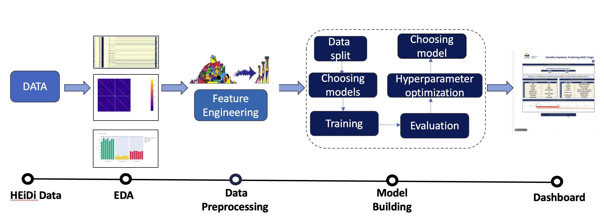

Predictive Analytics to Support HLBC 8-1-1 and HEiDi Triage
dashboard
data_science
education
dash
plotly
machine_learning
The HEiDi service, introduced in April 2020, enhanced the 8-1-1 nursing call flow by incorporating virtual physicians. This integration aimed to improve caller triage, reduce unnecessary urgent in-person ED visits, and prioritize patient safety. The main objectives of our project were (1) to extend the HEiDi physician expertise to the 8-1-1 nurse triage model to further reduce urgent in-person ED visits safely and reliably; (2) to gain insights on the most important features for the prediction task; (3) to identify any patterns in predicting two major classes.
Summary

The primary objective of this initiative was to enhance the 8-1-1 nurse triage model by incorporating the expertise of HealthLink BC Emergency iDoctor in Assistance Program (HEiDi) physicians. Through the development of a machine learning model to predict HEiDi physician disposition, the project aimed to improve nurse triage decisions, reducing urgent in-person emergency department (ED) visits. Techniques such as preprocessing, feature engineering, and data visualization were employed. The project included an automated data pipeline for pre-processing, model training and scoring, and user-friendly dashboard/GUI development for nurse visualization.